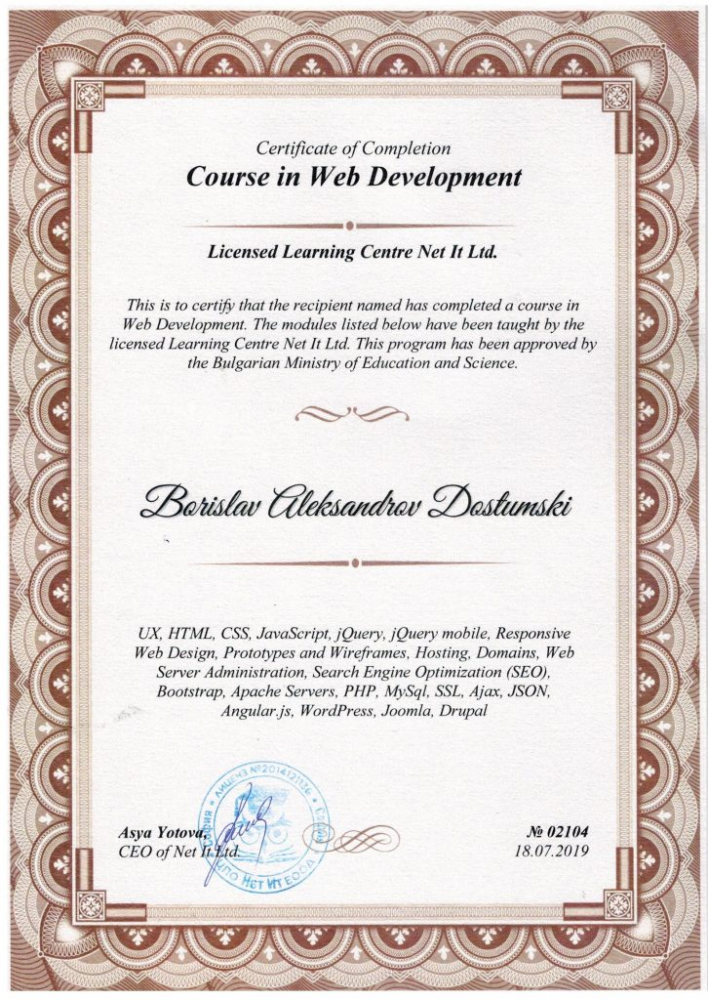

NetIT - Web Development
NetIT - Web Development
- Issuer: Baeldung
- Duration: 380+ hours
- Obtained: 2019-07-18
During my training, I was able to learn and use all the technologies I need to develop a complete web application like front-end, back-end, databases, CMS, and Web Server Administration.
Tech Skills
- UX
- HTML
- CSS
- JavaScript
- jQuery
- jQuery mobile
- Responsive Web Design
- Prototypes and Wireframes
- Hosting
- Domains
- Web Server Administration
- Search Engine Optimization (SEO)
- Bootstrap
- Apache Servers
- PHP
- MySql
- SSL
- Ajax
- JSON
- Angular.js
- WordPress
- Joomla
- Drupal
